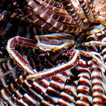
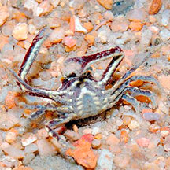
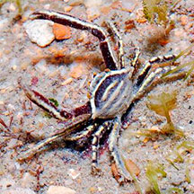

|
|
| crabs text index | photo index |
| Phylum Arthropoda > Subphylum Crustacea > Class Malacostraca > Order Decapoda > Brachyurans > Family Pilumnidae |
| Crinoid crabs awaiting identification* Family Pilumnidae updated Dec 2019 Where seen? This tiny crab is found living in feather stars (Class Crinoidea) and nowhere else. It is thought that the crab does NOT eat the feather star host, and in fact, protects it from predators. Crabs that are known to live in our feather stars include Harrovia species and Ceratocarcinus longimanus. Features: Body width 1cm. Body somewhat hexagonal, with long legs and long narrow pincers. Its colours and patterns usually perfectly match its feather star host. Usually, only crab is found in each feather star. Status and threats: Our Harrovia species are listed as 'Critically Endangered' on the Red List of threatened animals of Singapore. As it is only found in feather stars, it depends on protection of our reefs. According to Dr Tan Heok Hui, Harrovia longipes was last recorded from Singapore waters in the 1990s, and there had been no collections or reported sightings since then. Until Dr Tan found two in 2012. |
 Sisters Island, Feb 15 Photo shared by Loh Kok Sheng on flickr. |
 |
 |
*Species are difficult to positively identify without close examination.
On this website, they are grouped by external features for convenience of display.
Links
|